1과목: 일반기계공학
1. 송출량이 많고 저양정인 경우 적합하며 회전차의 날개가 선박의 스크루 프로펠러와 유사한 형상의 펌프는?
2. 주로 나무나 가죽, 베크라이트 등 비금속이나 연한 금속의 거친 가공에 가장 적합한 중(file)은?
3. 용접 이음의 장점이 아닌 것은?
4. 동력 전달용 나사가 아닌 것은?
5. 그림과 같은 블록 브레이크에서 드럼 축의 레버를 누르는 힘(F)을 우회전할 때는 F1, 좌회전할 때는 F2라고 하면
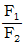
의 값은? (단, 중작용선이며 모두 동일한 제동력을 발생시키는 것으로 가정한다.)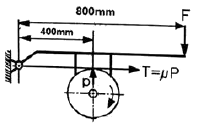
6. 지름 20mm, 인장강도 42MPa의 둥근 봉이 지탱할 수 있는 허용범위 내 최대하중(N)은 얼마인가? (단, 안전율은 7이다.)
7. 그림과 같은 외팔보의 끝단에 집중하중 P가 작용할 때 최소 처짐이 발생하는 단면은? (단, 보의 길이와 재질은 같다.)
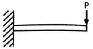
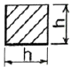
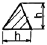
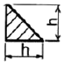
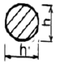
8. 유량이나 입구 측의 유압과는 관계없이 미리 설정한 2차측 압력을 일정하게 유지하는 것은?
9. 주축의 회전운동을 직선 왕복운동으로 바꾸는데 사용하는 밀링 머신의 부속장치는?
10. 일반적인 구리의 특성으로 틀린 것은?
11. KS규격에 의한 구름 베어링의 호칭번호 6200ZZ에서 “ZZ”의 의미로 옳은 것은?
12. 키(key)의 설계에서 강도상 주로 고려해야 하는 것은?
13. 평벨트 전동장치와 비교한 V-벨트 전동장치의 특징으로 옳은 것은?
14. 측정하고자 하는 축을 V블록 위에 올려놓은 뒤 다이얼 게이지를 설치하고 회전하였더니 눈금 값이 1mm라면 이 축의 진원도(mm)는?
15. 일반적인 유량측정 기기에 해당하는 것은?
16. 지름 2.5cm의 연강봉 양단을 강성벽에 고정한 후 30℃에서 0℃까지 냉각되었을 경우 연강봉에 생기는 압축응력(kPa)은? (단, 연강의 선팽창 계수는 0.000012, 세로탄성계수는 210MPa이다.)
17. 비틀림 모멘트를 받아 전단응력이 발생되는 원형 단면 축에 대한 설명으로 틀린 것은?
18. 정밀주조법 중 셀 몰드법의 특징이 아닌 것은?
19. 구상 흑연 주철에 관한 설명으로 틀린 것은?
20. 프레스 가공이나 주조 가공 등으로 생산된 제품의 불필요한 테두리나 핀 등을 잘라 내거나 따내어 제품을 깨끗이 정형하는 작업은?
2과목: 기계열역학
21. 최고온도 1300K와 최저온도 300K 사이에서 작동하는 공기표준 Brayton 사이클의 열효율(%)은? (단, 압력비는 9, 공기의 비열비는 1.4이다.)
22. 내부 에너지가 30kJ인 물체에 열을 가하여 내부 에너지가 50kJ이 되는 동안에 외부에 대하여 10kJ의 일을 하였다. 이 물체에 가해진 열량(kJ)은?
23. 풍선에 공기 2kg이 들어 있다. 일정 압력 500kPa 하에서 가열 팽창하여 체적이 1.2배가 되었다. 공기의 초기온도가 20℃일 때 최종온도(℃)는 얼마인가?
24. 성능계쑤가 3.2인 냉동기가 시간당 20MJ의 열을 흡수한다면 이 냉동기의 소비동력(kW)은?
25. 이상적인 디젤 기관의 압축비가 16일 때 압축 전의 공기 온도가 90℃라면 압축 후의 공기의 온도(℃)는 얼마인가? (단, 공기의 비열비는 1.4이다.)
26. 어떤 가스의 비내부에너지 u(kJ/kg), 온도 t(℃), 압력 P(kPa), 비체적 v(m3/kg) 사이에는 아래의 관계식이 성립한다면, 이 가스의 정압비열(kJ/kg·℃)은 얼마인가?
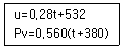
27. 랭킨사이클의 각 점에서의 엔탈피가 아래와 같을 때 사이클의 이론 열효율(%)은?
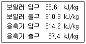
28. 다음 중 경로함수(path function)는?
29. 엔트로피(s) 변화 등과 같은 직접 측정할 수 없는 양들을 압력(P), 비체적(v), 온도(T)와 같은 측정 가능한 상태량으로 나타내는 Maxwell 관계식과 관련하여 다음 중 틀린 것은?
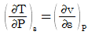
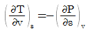
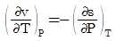
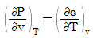
30. 고온 열원의 온도가 700℃이고, 저온 열원의 온도가 50℃인 카르노 열기관의 열효율(%)은?
31. 랭킨사이클에서 25℃, 0.01MPa 압력의 물 1 kg을 5MPa 압력의 보일러로 공급한다. 이때 펌프가 가역단열과정으로 작용한다고 가정할 경우 펌프가 한 일(kJ)은? (단, 물의 비체적은 0.001 m3/kg이다.)
32. 처음 압력이 500kPa이고, 체적이 2m3인 기체가 “PV=일정”인 과정으로 압력이 100kPa까지 팽창할 때 밀폐계가 하는 일(kJ)을 나타내는 계산식으로 옳은 것은?
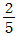
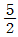
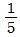
33. 자동차 엔진을 수리한 후 실린더 블록과 헤드 사이에 수리 전과 비교하여 더 두꺼운 게스킷을 넣었다면 압축비와 열효율은 어떻게 되겠는가?
34. 냉매로서 갖추어야 될 요구 조건으로 적합하지 않은 것은?
35. 이상적인 가역과정에서 열량 △Q가 전달될 때, 온도 T가 일정하면 엔트로피 변화 △S를 구하는 계산식으로 옳은 것은?
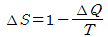
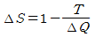
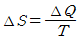
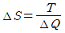
36. 어떤 이상기체 1kg이 압력 100kPa, 온도 30℃의 상태에서 체적 0.8m3을 점유한다면 기체상수(kJ/kg·K)는 얼마인가?
37. 그림과 같이 A, B 두 종류의 기체가 한 용기 안에서 박막으로 분리되어 있다. A의 체적은 0.1m3, 질량은 2kg이고, B의 체적은 0.4m3, 밀도는 1kg/m3이다. 박막이 파열되고 난 후에 평형에 도달하였을 때 기체 혼합물의 밀도(kg/m3)는 얼마인가?
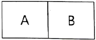
38. 비가역 단열변화에 있어서 엔트로피 변화량은 어떻게 되는가?
39. 원형 실린더를 마찰 없는 피스톤이 덮고 있다. 피스톤에 비선형 스프링이 연결되고 실린더 내의 기체가 팽창하면서 스프링이 압축된다. 스프링의 압축 길이가 Xm일 때 피스톤에는 kX1.5N의 힘이 걸린다. 스프링의 압축 길이가 0m에서 0.1m로 변하는 동안에 피스톤이 하는 일은 Wa이고, 0.1m에서 0.2m로 변하는 동안에 하는 일이 Wb라면 Wa/Wb는 얼마인가?
40. 밀폐계에서 기체의 압력이 100kPa으로 일정하게 유지되면서 체적이 1m3에서 2m3으로 증가되었을 때 옳은 설명은?
3과목: 자동차기관
41. 디젤 엔진의 고압연료 분사장치에서 노크를 방지하기 위해 초기 분사량을 최소화하고 착화 이후의 분사량을 크게 하도록 설계된 분사노즐은?
42. 가솔린 엔진의 노크 발생원인과 거리가 먼 것은?
43. 자동차 엔진에서 피스톤 링의 기능이 아닌 것은?
44. 디젤 엔진의 회전속도가 1500rpm일 때 분사지연과 착화지연시간을 합쳐
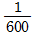
초면 상사점 전 몇 도(°)에서 연료가 분사되는가? (단, 최대폭팔 압력은 상사점에서 발생한다.)45. 전자제어 가솔린 엔진의 연료분사장치에서 엔진부하와 엔진회전수에 따라 신호 전압이 급격히 변화하는 센서는?
46. 가솔린 엔진의 인젝터 작동 시 연료 분사량에 가장 큰 영향을 주는 것은?
47. LPG 엔진에서 기체 및 액체 연료를 차단 또는 공급하는 밸브는?
48. 내연기관의 열역학적 정압 사이클에서 이론 열효율 η을 구하는 식으로 옳은 것은? (단, ε:압축비, k:비열비, σ:단절비이다.)
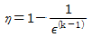
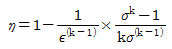
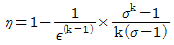
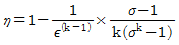
49. 베어링 크러시(bearing crush)에 대한 설명으로 틀린 것은?
50. 전자제어 가솔린 엔진에서 엔진의 최대토크 구현을 목표로 점화시기를 제어하는 시스템은?
51. 자동차규칙상 승용자동차, 화물자동차, 특수자동차 및 승차정원 10명 이하인 승합 자동차의 공차상태에서 좌우로 기울인 상태에서 전복되지 않는 최대안전경사각도(°)는? (단, 차량총중량이 차량중량의 1.2배 초과인 경우이다.)
52. 엔진의 윤활장치 중 유압조절밸브의 기능에 대한 설명으로 옳은 것은?
53. 엔진의 열효율에 대한 설명으로 틀린 것은?
54. 전자제어 가솔린 엔진에서 시동 초기 공회전 속도를 결정하고 기본 분사량과 점화시가등을 결정하기 위한 보정 신호로 사용되는 센서는?
55. 어떤 4행정 엔진의 밸브 개폐시기가 다음과 같을 때 흡기밸브의 열림 각(°)은?
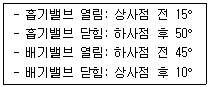
56. 디젤 엔진에서 과급기 설치 시의 장점으로 틀린 것은?
57. 디젤 엔진의 배출가스 후처리장치(DPF 또는 CPF)에서 필터에 포집된 PM의 재생시기를 판단하는 방법으로 틀린 것은?
58. 디젤 엔진의 연소과정 순서로 옳은 것은?
59. 전자제얼 연료분사장치에서 수온센서에 대한 설명으로 옳은 것은?
60. 가솔린 엔진과 비교한 LPG엔진에 대한 설명으로 틀린 것은?
4과목: 자동차새시
61. 하이브리드 자동차 용어(KS R 0121)에 의한 하이브리드 정도에 따른 분류가 아닌 것은?
62. 다음 중 ABS 시스템의 고장진단에서 점검 사항으로 거리가 먼 것은?
63. 종감속 기어 중 하이포이드 기어의 장점이 아닌 것은?
64. 다음 중 4륜 조향장치(4WS)의 적용 효과로 틀린 것은?
65. 하이브리드 자동차의 회생제동에 의한 에너지 변환 모드의 설명으로 옳은 것은?
66. 자재 이음 및 슬립 이음 등의 자동차 추진축 주요 기능으로 틀린 것은?
67. 다음 중 급제동 시 뒷바퀴가 먼저 고착되는 주요 원인으로 옳은 것은?
68. 자동차 및 자동차부품의 성능과 기준에 관한 규칙에서 연결자동차의 제동장치 기준으로 틀린 것은?
69. 코너링 포스(cornering force)와 코너링 파워(comering power)에 영향을 주는 요소가 아닌 것은?
70. 자동변속기의 댐퍼 클러치에 대한 설명으로 틀린 것은?
71. 브레이크 패드의 요구특성으로 틀린 것은?
72. 타이어의 구조에서 직접 노면과 접촉되어 마모에 견디고 견인력을 좋게 하는 것은?
73. 전자제어 현가장치의 작동에 대한 설명으로 틀린 것은?
74. 수동변속기의 고장진단에서 기어가 빠지는 원인으로 옳은 것은?
75. 전자제어 자동변속기의 오일펌프에서 발생한 유압을 라인 압력으로 조정하는 밸브는?
76. 전자제어 동력 조향장치에서 저속으로 주행할 때 운전자의 조향 휠 조작력은?
77. 브레이크 마스터 실린더에 대한 설명으로 틀린 것은?
78. 어ᄄᅠᆫ 승용자동차를 섀시동력계에서 운전하여 측정한 자료가 구동륜에서 측정한 구동력 750N, 시험속도 100km/h이면 기관의 제동출력(kW)은? (단, 동력전달계 효율은 0.8이다.)
79. 제동초속가 50km/h, 자동차의 중량이 2000kgf이며, 회전 관성중량이 차량중량의 5%일 때 제동거리(m)는? (단, 제동력은 전륜이 각각 250kgf, 280kgf이고 후륜이 각각 360kgf, 400kgf이다.)
80. 다음 중 제동을 할 때 바퀴와 노면의 마찰력이 가장 클 때는?
5과목: 자동차전기
81. 자동차 CAN 통신 시스템의 종류로125kbps 이하에 적용되며 바디전장 계통의 데이터 통신에 응용하는 것은?
82. 점화 플러그의 구비조건으로 틀린 것은?
83. 자동차 냉방장치에서 고온·고압의 기체 냉매를 냉각시켜서 액화 상태로 변화시키는 것은?
84. 자동차규칙 중 후미등의 설치 및 광도기준에서 ( )안에 알맞은 것은?
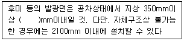
85. 오실로스코프를 사용한 교류 발전기 출력파형이 [보기]와 같이 나타났을 때, 다이오드와 스테이터 코일의 이상 유무를 판정한 것으로 틀린 것은?
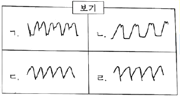
86. 자동차용 3상 교류 발전기에 대한 설명으로 옳은 것은?
87. 다음 중 에어컨 작동 시 압력을 측정한 결과 고압은 정상보다 낮고 저압은 높게 측정되었다면 결함사항으로 옳은 것은?
88. 전기장치 작동에 대한 설명으로 틀린 것은?
89. 에어백 PPD(Passenger Presence Detect)센서가 감지하지 않는 것은?
90. 점화플러그의 불꽃전압에 대한 설명으로 틀린 것은?
91. 하이브리드 자동차에 사용되는 모터의 작동원리는?
92. 자동차 배터리 전해액 비중이 1.260이고 전해액의 온도가 40℃라면 표준온도에서의 비중은?
93. 자동차관리법령상 전조등 시험기의 검사기준에서 광축편차 판정정밀도 허용오차 기준은?
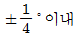
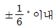
94. 1사이클(cycle) 중 ‘ON’되는 시간을 백분율로 나타낸 것은?
95. 광도 20000 cd의 광원에서 20m 떨어진 위치에 있어서의 조도(lx)는?
96. 자동차 전장회로도에서 확인할 수 없는 것은?
97. 디젤엔진에서 예열플러그가 단선되는 주요원인으로 틀린 것은?
98. 납산배터리의 방전 시 화학 반응으로 옳은 것은?
99. 병렬(하드방식)하이브리드 자동차에서 엔진의 스타트&스톱 모드에 대한 설명으로 옳은 것은?
100. 후진 경고 장치의 주요 구성부품은?